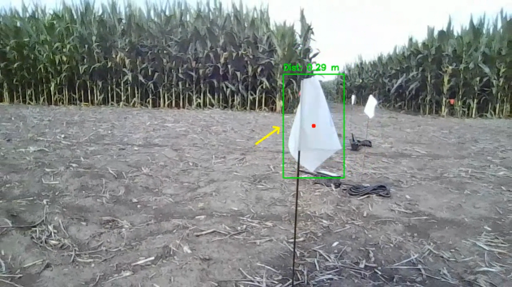
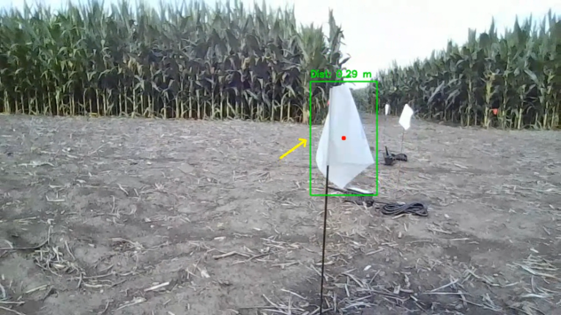

Joseph Norwood
Mechanical & Aerospace Engineer

About Me
Hello there! I'm Joseph, a Mechanical & Aerospace Engineering student at Princeton University. My engineering interests are primarily in the dynamics and locomotion of robotic systems, but I enjoy any engineering challenge that requires a novel solution. You'll also find me tearing up the jiu jitsu mats or running aimlessly outside. I love sharing what I've learned, so feel free to reach out!
Professional Background
To learn more about my work experience beyond the projects listed here, feel free to explore my LinkedIn profile .
Projects
P-AgBot

 

I worked in Purdue's Multi-Scale Robotics and Automation Lab to make a new configuration of P-AgBot, one designed for the autonomous deployment and monitoring of soil moisture sensors developed by the Internet of Things for Precision Agriculture (IoT4Ag) at the University of Pennsylvania. A robust mechanical and electrical system was created and a deep learning-based visual servoing method was developed for motion control. Look out for a paper that will be published at the start of 2026!
Contact
Email: joseph.norwood@princeton.edu
GitHub: @norwooj